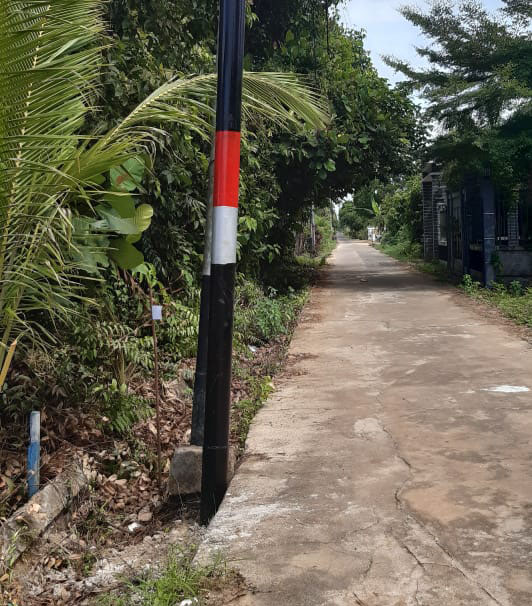
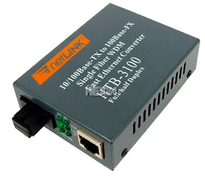
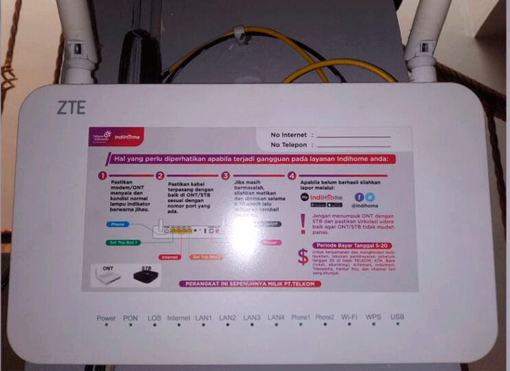

Pasang wi-fi di rumah Rp 1.700 per hari hanya untuk 2 orang tercepat, silahkan hubungi kami di WA 083130083000. Ingat kami menjual produk kami dengan murah bukan karena produk kami tidak berkualitas, kami telah hadir dari tahun 2016, dan telah banyak melakukan experimen jaringan, kami juga telah melakuakan peningkatan pada jaringan kami, mulai dari Upstrem untuk server kami yang memiliki 3 upstream, memiliki server sendiri di jakarta dan singapura untuk proses tunneling, dan mempunyai perangkat-perangkat jaringan yang berkualitas. Jadi tidak perlu diragukan lagi untuk kualitasnya. Ada yang bilang mending langganan indihome. Kami ingatkan lagi, di Tapos tidak ada yang namanya INDIHOME, kami kasih tau alasannya kalau itu bukan indihome. Mana ada Indihome numpang tiang PLN, Indihome mempunyai tiang sendiri seperti foto di bawah ini.  Dan juga kabel fiber indihome lebih besar karena mempunyai core yang sangat banyak. Indihome tidak memakai HTB atau alat konvert dari fiber ke LAN seperti foto di bawah ini.  Untuk indohome dari kabel fiber langsung ke ONT(perangkat wi-fi milik indihome) seperti foto di bawah ini.  Di tapos tidak pakai seperti itu. Untuk indohome pelanggan akan mempunyai id pelanggan, dan bisa di gunakan untuk login ke aplikasi my indihome, di tapos tidak seperti itu. Indihome bayar bisa online, seperti di shopee, tokopedia, bisa bayar di alfamart dan indomaret, dan bisa bayar di tempat-tempat yang bisa melakukan pembayaran, seperti di brilink di konter pulsa dll. tapi di tapos malah di tagih ke rumah masing masing. Jadi bisa di simpulakan itu bukan indihome. Mending pakai wi-fi kami, ayo kita suport hasil karya anak kampung sendiri.